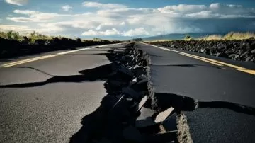

Sucesos
Temblor de esta tarde en Costa Rica
Publicado el 25/09/2011
Temblor en Costa Rica
El fuerte sismo se registró a las 13H21 locales (19H21 GMT) y causó cortes del servicio eléctrico en sectores de San José, donde muchas personas salieron a las calles. Mientras, el USGS informó que el sismo fue 6,2 grados magnitud momento, y que su epicentro fue 35 km al noroeste de la capital, a una profunidad de 28 km. El fuerte temblor causó apagones eléctricos en sectores de San José y contribuyó a que colapsaran las líneas de teléfonos celulares. Cuando llevaba unos 20 segundos y parecía que iba a terminar el sismo, vino un intenso remezón que llevó a mucha gente a salir a la calle para protegerse. El agua de las piscinas se movió tanto que llegaron a desbordarse en algunos lugares, según testigos que dijeron que en 30 años no habían visto "nada igual". El miércoles, otro sismos de 4 grados de magnitud en la escala de Ricther sacudió la zona central de Costa Rica sin que se reportaran daños ni víctimas, pero el de este jueves fue mucho más largo y más intenso.
O comentarios